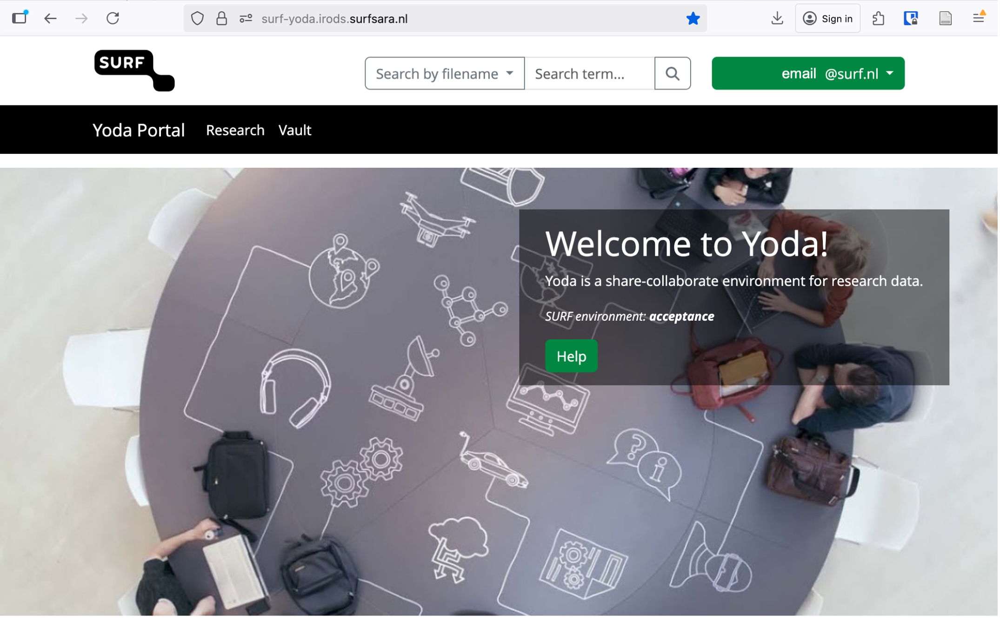

What are best practices for research data management (RDM)?
Objectives
Explain the importance of metadata and its relation to the
dataset
About Yoda
Yoda logo
Yoda is a piece of open source software that runs on
top of iRODS, and it
facilitates certain research data management (RDM) flows. The typical
situation that you may encounter is that an IT department will offer a
Yoda instance for your institution, which you can access through Yoda’s
web interface.
As a brief summary of Yoda’s concepts, Yoda allows multiple users to
cooperate for data management in so-called groups. A
dataset consists of files brought together within a
folder. It is at this folder level that you attach the
metadata that belongs to that dataset. Once the dataset
is ready for long-term storage, Yoda allows you to save a frozen version
(snapshot) in the Vault area.
Research data management best practices
In terms of best RDM practices, metadata is of key importance. What
is metadata and why is it so important?
A common definition of metadata is that these are “data about data”.
A more precise definition is that metadata are structured data that
deliberately describe characteristics of other data1. Metadata consists of
information pieces that accompany the data itself, in order not only to
describe the data but also to allow finding it back by means of
searching through those bits of information. In that way, metadata is
essential for finding data (back) and understanding it, and thus for
scientific discovery and progress.
Researchers can gather data, add metadata, and then share it with
others. Thus, years after the dataset has been put together, somebody
else (or the future self of the original researcher) can find the data
and reuse it, possibly, in novel research projects. According to RDM
best practices, the metadata belongs to the dataset; it is an intrinsic
part of it. Metadata is also essential for making data FAIR: good,
machine-readable metadata helps to make datasets findable, accessible,
interoperable and reusable.
To facilitate RDM best practices, Yoda facilitates the
addition of machine-readable metadata to datasets through its
web portal. Another RDM best practice facilitated by Yoda is the option
to preserve a dataset by creating a secure and immutable
copy of research data and the associated metadata in the Vault
area. That version is then archived and cannot be changed anymore. To
continue working, you can make a copy of it back to the research area in
order to manipulate the copied data.
In the following tutorial we will be showcasing and exercising these
flows, at times as though you were a researcher and data steward.
Key Points
Yoda allows multiple users to cooperate for data management
Metadata is an intrinsic part of any dataset
Yoda facilitates the management of datasets and metadata in a web
portal
One can also distinguish different types of metadata
such as descriptive, administrative, or structural metadata. In case you
want to learn more about metadata, you can read this Metadata primer by Riley (2017) or follow the lesson
Fundamentals of Scientific Metadata↩︎
Before you can login, course instructors should give you access to
the portal.
Log in with your credentials or SRAM by clicking on Sign in and
entering your email address. In your browser it should look something
like this:

Example of how the Yoda portal looks like once
logged in
Click on the Research tab. Verify that you see two folders:
research-tutorial-unsup and
research-tutorial-sup. These two folders will represent two
different groups that you will be working in. You have access to these
groups and the Yoda portal because you were added as a member. You can
only log in to Yoda when you are added to a specific group in
Yoda.
Try to remember that we will start working in the unsupervised
group, and only in the last exercise we will move to the other
one.
Make sure you invite workshop participants beforehand to a research
group and provide a link to the correct portal address.
Key Points
Use your institutional email address to enter the portal
You can only log in to Yoda when you are added to a specific group
in Yoda
Explain the difference between the Research area
and the Vault area in Yoda
As an instructor, make sure you prepare a folder with a picture of
the dress. It should be in the Vault area and workshop participants
should have access to it. Also make sure that the words “Mondrian” or
“Yves” are present in the metadata, but not in the file or folder names.
You can use the folder published
on GitHub to prepare the folder in Yoda. Make sure the dataset is in
the Vault and removed from the Research area in Yoda.
Introduction
In this scenario we are going to pretend that you are a researcher
who knows a dataset exists in the Vault of the Yoda instance you are
working in. You only know some information about that dataset (i.e.:
some metadata), but you know you want to use the data in the
dataset.
By the end of the exercise you will know how to
search for datasets in Yoda and work with the data in a
dataset. You will also learn the difference between the
Research area and the Vault area in
Yoda.
Callout
For the exercises today, we will be alternating between the Research
and the Vault tabs. The idea behind those two tabs is that there is one
working area, separated from a frozen
area.
The working area is where you perform all the usual data and metadata
managing. Think of operations related to adding, removing, modifying or
shuffling files around (for the data), and also analogous operations for
the metadata. The frozen area is a place to make datasets unmodifiable,
sort of snapshots if you will, so that they can be safely used by
others.
In Yoda’s terms, the working area is the Research
tab from the menu, and the frozen area is the
Vault.
Preparing a working place in the Research space
When you log into the the portal of a Yoda instance (or Yoda server,
or, from now on simply Yoda) you are confronted with a screen showing a
menu bar at the top. That menu bar allows you to choose between, at
least, two tabs; namely: Research and Vault.
Portal detail: Research and Vault tabs
We will now pretend that you are working in a project of your own.
You will therefore need to create a folder for that project. Since you
want to work actively with a dataset for this exercise, you will now
create that folder in the Research area.
Here are the steps you need to follow:
In the Yoda portal, click on the Research tab of the main
menu.
You can see one folder or a list of folders. These are the groups
that you are a member of. From the list of folders that appear, click on
the research-tutorial-unsup folder.
You will create a folder here to represent your project. Do so by
clicking on the Create Folder button.
Give the new folder you are creating a name similar to “Project
X”, where X should be something that you will be happy to work with,
like: “Project Peter” or “Project Flamingos”. Please, remember what you
choose, because the rest of the course attendants will be creating their
own folders here too, so you may see a different list every time you
look.
You are now set to go! This project folder will be the place where
you will import the dataset that you are going to search for in the
following section.
Searching for a dataset in the Vault
Callout
In Yoda you can search in the Vault for datasets that have been
placed there by you or others within your same groups. Yoda requires
that you choose in which parts of a dataset you want to search, and the
options it offers include:
search by file name
search by folder name
search by metadata
search by status
As explained at the beginning, you are pretending now to be a
researcher in need for a dataset that you know exists in this Yoda
instance. The information you have is little: it involves a picture of a
famous Mondrian dress by Yves Saint Laurent. That is precisely what you
need for your research! Let us find it now.
Challenge
Challenge 1: search by filename
Can you find the file?
1. In the Research tab of the Yoda portal, see that there is a search
box at the top
2. Type in the search box a word or words that you think are
reasonable for the little information you have about the dataset, such
as: “dress” or “Mondrian” or “Yves”
3. Hit “Enter” or click on the magnifying glass button to the right
of the search box
The result is probably going to disappoint you: you will not find
anything. By default, when you search this way, you exercise a “Search
by file name” (see that “search by filename” is selected on the
drop-down list to the left of the search box). Let us try a different
search method in the next section.
Challenge
Challenge 2: Search by folder
Can you find the folder?
1. To the left of the search box of the previous search, choose now
“Search by folder”.
2. Type in the search box a word or words that you think are
reasonable for the little information you have about the dataset, such
as: “dress” or “Mondrian” or “Yves”
3. Hit “Enter” or click on the magnifying glass button to the right
of the search box
The result is probably going to disappoint you this time as well: you
will not find anything. Let us try yet a different search method.
Challenge
Challenge 3: Search by metadata
Can you find the metadata?
1. To the left of the search box, choose now “Search by
metadata”.
2. Type in the search box a word or words that you think are
reasonable for the little information you have about the dataset, such
as: “dress” or “Mondrian” or “Yves”
3. Hit “Enter” or click on the magnifying glass button to the right
of the search box
Voilà! You should now have at least one result. However, how do you
know what is the good one? You will have to bring it to your working
area in order to inspect it.
Callout
🍝🍔🍜 Food for thought
What is the name of the root folder of the dataset? Is this folder in
any way related to the name of any of the folders you can see in the
Research area? How is it related?
Importing a dataset to the Research space
You are now going to import the dataset you found in the Vault, into
the project folder that you created in the Resarch area a few steps ago.
Remember? You called it Project<something>.
From the list of results of your search, click on the one that
you want to work with (a hint: perhaps on the latest modified date, or
after viewing the contents).
Note that you are now in the Vault tab from the main menu. That
is because you are working with a dataset that was brought to the Vault
as a way to “share it in an unmodifiable state”.
Discussion
Challenge 4: inspect the metadata
Click on the Metadata button. Can you answer now some of the
questions below? For example: can you now explain why you were not able
to find the data set when searching by name or by folder, but you were
when you searched by metadata?
Questions:
What is the file name of the picture?
What is the folder name of the picture?
When was the picture taken?
Who took the picture?
Which location tag has been given to the picture?
What does the picture show (i.e.: can you describe what the
photograph has captured)?
Click on the “Close” button of the pop-up that is displaying the
metadata. You should be seeing the folder contents again.
In order to import the dataset into your Project folder, click on
the Actions button now. Then select the option that reads: “Copy
datapackage to research space”.
A pop-up will appear displaying your groups:
Picture of the pop-up for copying the
datapackage to research space
Choose the research-tutorial-unsup folder. Then choose
your Project folder within it.
When you have selected your Project folder, click on the button
“Copy package to research area”.
Working with the dataset
You have now found and imported a dataset from the Vault into your
Project folder. Let us simulate that you reuse the data
by looking at the picture!
In the Yoda portal, click on the Research tab from the main
menu
Navigate to your Project folder by clicking the
research-tutorial-unsup folder, and then click on your
Project folder.
You should now see a new folder in your Project folder, whose
name includes a large number between square brackets. This number is a
Unix epoch, which you can consider to be a timestamp indicating when you
made a copy of the folder. This notation prevents unexpected overwrites
when moving datasets around.
Click on the new folder name. You will see it has another folder
within it called original, and there is a
yoda-metadata[epoch].json file there as well. If you click
the Metadata button, it will be empty. How come!?
Well, look in the original folder instead. Click,
therefore, on the original folder. You should see a picture
file and a yoda-metadata.json file as well.
Click on the Metadata button now that you are in the original
folder. You should see a lot of metadata fields, and you can even modify
them! This metadata should be the same you saw before you imported the
dataset into your working area.
You can click on the “Close” button of the form to go back to the
list of files.
In order to simulate using the data, you can now click on the
name of the picture file. That will display the picture in a pop-up.
Alternatively, you can click on Download to simulate that you save a
dataset onto your laptop’s hard drive.
Lastly, click on the yoda-metadata.json file, which
will preview the .json file in your browser. You can also open this
.json file on your laptop with your favourite text editor. Can you
identify any of the information there? Exactly! It is the same metadata
as you see when you click on the Metadata button of the folder. Handy,
right? This way you will always have the metadata along with the data,
in a machine-readable format!
You have now completed this section. Feel free to move on to the next
exercise at your own pace, but make sure you have answered the questions
in the challenge above to
verify that you have found the intended dataset.
Key Points
You can create folders and upload files in the Research area
You can search for files, folders, and metadata for Groups that you
have access to
Copy a datapackage from Vault to Research space to continue working
with it
Look at the metadata to learn more about a dataset
How do you retrieve data from the Vault into Yoda’s Research
area?
Objectives
Demonstrate how to include useful metadata in Yoda
Show how to upload data in Yoda
Operate the cycle of securing, retrieving, and updating data
independently in Yoda
Introduction
In this scenario we are going to pretend that you are a researcher
who has been collecting data, and wants to freeze it in the Vault. You
will be assuming the role of a seasoned data practitioner who will
complete the process on their own, without any data steward’s
supervision or intervention.
By the end of the exercise you will know how to
advertise a dataset in Yoda’s Vault, taking care of the
metadata and the data.
You can work with any dataset you may have already on your laptop, or
you can pretend that you have one of your own by downloading something
from the Internet. For example, you can use the Data portal from the
Gemeente Amsterdam or one of the DANS Data
Stations to search for data that may appeal to you (please verify
the dataset’s license before you use it!).
In order to make it possible to walk through the unsupervised RDM
cycle, make sure you prepare a Yoda Group within a Category where all
workshop participants are part of the datamanager group.
Preparing another working place in the Research space
Remember that you have your own Project folder within the
research-tutorial-unsup folder in the Research space. You
may still have the folder with the data that you found in the previous
exercise. You will now be working with a different dataset, so you can
best create a working folder directly in your Project folder.
Please do so now. Give it a suitable name for the dataset you will be
working with. We will refer to this new folder as the dataset
folder during this exercise. In order to accomplish this you can
follow analogous steps as those you followed during the previous
exercise.
Filling in the metadata
The dataset’s metadata is crucial when you are working within RDM
best practices. It will ensure that your dataset is reusable in the
future (for others but also for your future self!). So you can best
start with it, even before the data exists in Yoda. Let us tackle that
right now.
In the Yoda interface, navigate to the
research-tutorial-unsup folder, then your Project folder,
and then to the dataset folder that you have prepared for this
exercise.
Once you are in the dataset folder, click on the Metadata button
to start editing the metadata.
Callout
Now take all the time you need to think about what is reasonable
metadata, and make sure you write plenty of it. Recall the feeling when
you were searching for data in the previous exercise.
For inspiration, what would have helped you to be more effective
in finding the dataset? Apply that now to facilitate that others will
find your dataset both when they know it is there, and when they do not
know it is there. This last case describes a data
discovery scenario.
If you are working with a dataset which is published somewhere
else (e.g., like the Gemeente Amsterdam or DANS), you can draw ideas
from the metadata that you already actually see in that portal.
For datasets that involve spatial or temporal information, make
sure you fill in appropriate intervals and location descriptors. You may
look at the previous exercise’s dataset to see how you can include
multiple location descriptors.
Think of the data policies from your research field or your
institution. How could you use the form to add metadata that will
fulfill those policies’ requirements?
Pay special attention to filling in a reasonable value for the
Version field of the metadata. We recommend that you enter a number.
Remember the value you enter.
Once you are ready, click on the Save button. If the form is
still open, you may want to scroll all the way up and start going down
slowly while you verify for error messages asking you to fill in
mandatory fields.
Example of missing information in a mandatory
metadata field
You can now see that there is a file in your folder called
yoda-metadata.json. That is where Yoda stores the metadata
in a format that you can bring along as a companion to the actual
data.
If you have any colleagues in the course, now would be a good
moment to ask them to verify your metadata and engage in a little
discussion to see if what you have written is clear to others.
Uploading data
Now that you have the metadata, you can upload files with actual data
from your laptop. For this exercise and simplicity’s sake, it will be
enough to upload one or two files no larger than a few megabytes as
though they are a full dataset; adding more would be overkill today.
In order to upload a file:
In the Yoda interface, navigate to the
research-tutorial-unsup folder, then your Project folder,
and then to the dataset folder that you have prepared for this
exercise.
Once you are in the dataset folder, click on the Upload
button.
Yoda’s upload button
Your browser’s file exploring dialog will pop up. You can
navigate there through your laptop’s folders to locate the data files
you want to upload. Locate those files.
Double click on the file you want to upload (you can also upload
multiple files at once or an entire folder). Yoda will display a
progress bar which will be filling up as the file uploads. When the
upload is ready, you will see an OK.
Completed uploads in the portal
Close the progress bar dialog, and you will be back on your
dataset folder. You should now see your file(s) listed there.
If you want to play with a multi-file dataset, you can repeat the
upload process with more files.
Now you have made the files available to Yoda in the Research space.
You are ready to freeze the dataset and make it available for others to
use within this Yoda instance!
Submitting the dataset to the Vault
Now that you have a dataset which includes data and metadata, you can
initiate the flow that will place the frozen version of the dataset in
the Vault. This is going to be an unsupervised process during this
exercise, simulating a situation where you are an expert data
practitioner. This means that you are yourself in charge of not only
submitting, but also accepting the dataset in the Vault.
In the Yoda interface, navigate to the
research-tutorial-unsup folder, then your Project folder,
and then to the dataset folder that you have prepared for this
exercise.
Once you are in the dataset folder, click on the Actions button,
and select the Submit option.
After submitting, you will see that a green label appears next to
the folder’s name title, indicating that the folder is submitted to the
Vault. As you can see, you cannot make changes to the data or metadata
anymore (unless you click the Unsubmit option on the Actions
button).
The datapackage is now submitted to the
Vault
Because you have datamanager rights in this category, you accept
the submission to the Vault yourself. All you have to do is click on the
Actions button, and select the Accept option.
After accepting, you will see that a new green label appears next
to the folder’s name title. After a few minutes (depending on the file
sizes and how busy the server may be), it will change from “Accepting”
to “Accepted”.
Verify your dataset is in Vault
Now you must see your dataset listed including the [Unix epoch] in
the vault-tutorial-unsup folder. Verify that this is the
case.
Congratulations! You have just successfully placed a frozen version
of your dataset in the Vault.
Deleting the working copy of the dataset
To simulate a real situation, you can now rely on the Vault to keep
your dataset for you, so you can remove it from your working area. If
you try to remove the dataset folder directly, Yoda may complain
indicating that it is not empty. In that case, you will have to delete
the files inside it first.
In the Yoda interface, in the Research tab, navigate to the
research-tutorial-unsup folder, and then to your Project
folder.
Once you are in the Project folder, you can click on the three
dots button to the right of the dataset folder that you have prepared
for this exercise, and select Delete. Accept the verification step to
delete the folder.
Done! The working copy of the dataset is now history. Long live the
preserved dataset in the Vault!
Recovering the dataset from the vault
Now we are going to pretend that a year has passed since you last
worked with your dataset. In the meantime you have decided you want to
add a new file describing something related to the procedure, to the
dataset (e.g., a README file). In your view, this is simply a version
upgrade, so we should reuse the same original dataset. For that, you
will need to make a working copy out of the version that you had stored
in the Vault a year ago.
Bring now a copy of the dataset from the Vault to your Project
folder, following the same steps you applied during the previous exercise. You can
locate your dataset by searching for it, or by navigating to the Vault
tab, then the vault-tutorial-unsup folder, and scrolling
through the datasets that may be there.
You will have completed this exercise once you can see a dataset
folder within your Project folder in the Research area. This is how it
could look:
Screenshot of a datapackage copied back into
Research (including Unix epoch)
Modifying the dataset as a new version
Navigate to the dataset folder within your Project folder in the
Research area. You will see that if you click the Metadata button the
metadata will be empty. Remember: you will have to navigate into the
folder called original. Then you can edit the metadata
(i.e.: the metadata will be there already). Increase the version number
now, and save the changes to the metadata.
Prepare a new README file on your laptop that you want to upload into
this dataset folder. Upload it now to the original
folder.
Submitting the new version to the Vault
As you can see you have had to work in the original
folder, but that is likely an unsuitable name for any worthy dataset.
The proper name will be that of the original dataset folder. Rename now
the original folder to that of the dataset folder (you will
need to step out of the original folder and use the three
dots button next to it to find the Rename option).
Now you can submit to the Vault this new version of your dataset.
You will have completed this exercise once you can see your two
dataset folders named the same in the Vault (with different Unix epochs
attached).
Food for thought
Well done! You have now completed this section. Feel free to move on
to the next exercise at your own pace, but make sure you have answered
the questions below to verify that you have understood the unsupervised
flow to secure datasets in the Vault.
Callout
You must have realised by now that proper metadata management is key,
but also very difficult to do properly. Yoda simplifies this effort a
bit by allowing metadata to be added to folders only.
Question: Can you think of situations where this approach will feel
like a limitation, instead of a blessing? How would you tackle those,
then?
Yoda also simplifies metadata management by allowing you to fill in a
nice predefined form.
Could you think of a need for your institution to customise that
form? Or maybe customise the form per research discipline?
Can you find something in the Yoda
documentation that points to where this could be arranged? (hint:
metadata schemas)
When you are defining metadata in the current form, you can probably
see that there is a field for tags.
What are these useful for?
What is in your own words a good definition for the Vault? What is it
useful for?
Key Points
You can add metadata to your project in the Research area
You can submit a dataset to the Vault to secure a frozen version of
your dataset
You can copy a datapackage from Vault to Research space to continue
working with it
How do researchers and data stewards collaborate in Yoda?
Objectives
Operate the cycle of securing data supervised by a data steward in
Yoda
Demonstrate how to check metadata and approve submissions to Yoda
Vault
In order to make it possible to walk through the supervised RDM
cycle, make sure you prepare a Yoda Group within a Category where you
can add specific participants who will act as data steward to the
datamanager group.
Introduction
In this scenario we are going to recreate the same steps as in the previous exercise, but you will be
working in a group that requires that a data steward approves your
dataset before it is allowed to reach the Vault. You will get the chance
to be the researcher, but also the data steward.
At the end of the exercise you will know how the
interaction between a researcher and a data
steward can lead to a dataset being placed in Yoda’s Vault.
Preparing another working place in the Research space
Follow the steps from previous two scenarios to create a new Project
folder and a new dataset folder in the Research space, but take care to
use the folder called research-tutorial-sup this time.
Filling the metadata and uploading data
Follow the steps from the previous scenario to provide metadata for
the dataset folder.
Follow the steps from the previous scenario to upload data to the dataset
folder.
Submitting the dataset to the Vault
Now that you have a dataset which includes both data and metadata,
you can again initiate the flow that will place a frozen version of the
dataset in the Vault. This is going to be a supervised process,
simulating a situation where you are collaborating with a data manager
or data steward. This means that the dataset will not reach the Vault
directly, but have to be accepted by a data manager.
Act as a data steward
Please get in touch now with the facilitators. They will give you
instructions on how to work (possibly, together with a fellow
participant) in order to simulate that you interact with a data steward
to:
get your dataset to the Accepted status, as expected,
and
exercise your data steward role
In short, the steps that the person with the data steward role will
have to fulfill are:
Open the submitted folder from a classmate
Find out the submitter’s e-mail address by looking at the
provenance information of the submitted folder
Send them an e-mail requiring a specific piece of
metadata
Reject the submission
Click the Action button in the Research area to
accept or reject the submission
Wait for the submitter to send the submission again
Verify that you now have the expected metadata
Approve the submission
Verify your dataset is in Vault
After you exchange interactions with the data steward and you get
their approval, you must see your dataset listed including the [Unix
epoch] in the vault-tutorial-sup folder. Verify that this
is the case.
Congratulations! You have just successfully placed a frozen version
of your dataset in the Vault, approved by a data steward.
Discussion
🍝🍔🍜 Food for thought
Now that you have experienced both the unsupervised and the
supervised flows, can you see when you would apply each in your
institute?
Who would be suitable candidates to be carrying out the task of
data steward for the sake of approving?
How is that scalable to cope with all the research data in your
institute?
How would you organise Research spaces in your institution’s
Yoda? Why? Can you think of an alternative organisation of Research
spaces?
Key Points
You can submit a dataset to the Vault to secure a frozen version of
your dataset
As a data steward, you can check the metadata and reject or approve
submissions
Well done! You have now finished the exercises for today. You can be
proud of having completed some tough work today.
If you think anything is still unclear, do not hesitate to contact
your facilitators.
For next steps with regards to Yoda, you can visit our documentation
pages here: Yoda
Hosting.
Thank you for your attention, and we hope to have been of help for
you today.
Callout
Complimentary information
A handy alternative interface to the YODA portal of a YODA
instance is the WebDAV interface: https://surf-data.irods.surfsara.nl (you can also
use WebDAV to get access to Yoda through your local file manager, by
mapping it as a network disk).
A feature we have not touched in this hands-on session is
Publishing. That is a next step in the flow after the Vault.

 Picture of the pop-up for copying the datapackage to research space
Picture of the pop-up for copying the datapackage to research space Example of missing information in a mandatory metadata field
Example of missing information in a mandatory metadata field Yoda’s upload button
Yoda’s upload button Completed uploads in the portal
Completed uploads in the portal The datapackage is now submitted to the Vault
The datapackage is now submitted to the Vault

 Click the Action button in the Research area to accept or reject the submission
Click the Action button in the Research area to accept or reject the submission